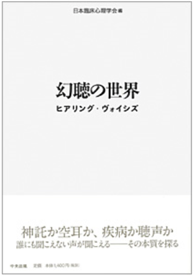

幻聴の世界 ―ヒアリング・ヴォイシズ
幻聴／ヒアリング・ヴォイシズを多角的にとらえる

いつのころだろうか、病気が治るものと思われてきたのは……
いつのころだろうか、病気になったら病院に行くようになったのは……
いつのころだろうか、空耳が幻聴と言われるようになったのは……
いつのころだろうか、幻聴が病気だと言われるようになったのは……
神の声の啓示によって、宗教を興した開祖の話も耳にします。人口の 4％の人が幻聴を聴いたことがあるといういくつかの調査報告があります。 誰の声かもしれない人の声に日常的に悩まされている人もいます。そうし
た「声」は、精神医学の対象となり、「幻聴」といった 精神疾患のひとつの 症状とされ、「声」をなくすためのさまざまな治療が行われています。本当に幻聴は疾患の症状なのでしょうか？空耳と言われていた、
「声」は空の彼方に消え去ったのでしょうか……。
- 目次と執筆者
- 序 章 ようこそ「声」の世界に：藤本豊・石澤健・吉田昭久
- 第１章 幻聴ってどんなもの？：藤本豊
- 第２章 幻聴の脳科学：木田次朗・朝田隆
- 第３章 幻聴と認知行動療法序：原田誠一
- 第４章 幻聴・ナラティブアプローチ：宮脇稔
- 第５章 インタヴォイスの活動：松王強
- 第６章 精神医学と幻聴：生田福郎
- 第７章 幻聴への新しいアプローチ：佐藤和喜雄
- 附 章 回復は孤立のなかでは起こらない：ロン・コールマン
編集：日本臨床心理学会：1,470円
地域臨床心理学
精神科臨床・地域での生活支援の展開
「地域移行」が進む中、地域で実践されている「臨床心理学的支援」を学ぶ一冊。
地域で生活する精神障害者に対してどのような心理学的支援方法が可能か、基礎心理学を臨床の場でどのように応用するか、 医療・保健・福祉施設での心理職の仕事内容等、様々な実例を交えて考える。
- 目次と執筆者
- 序 章 地域臨床心理学入門：藤本豊
- 第１章 地域のなかでの心理学：藤本豊
- 第２章 精神科病院での臨床心理：森由美子
- 第３章 地域生活支援センターでの臨床心理：高島真澄
- 第４章 精神科居住系施設での臨床心理：宮脇稔
- 第５章 デイケアでの臨床心理：栗原毅
- 第６章 精神科クリニックでの臨床心理：上田将史
- 第７章 保健所での臨床心理：小谷野博
- 第８章 作業所での臨床心理：佐藤和喜雄
- 第９章 家族支援と臨床心理：藤本 豊
編集：日本臨床心理学会:2,730 円（税込）